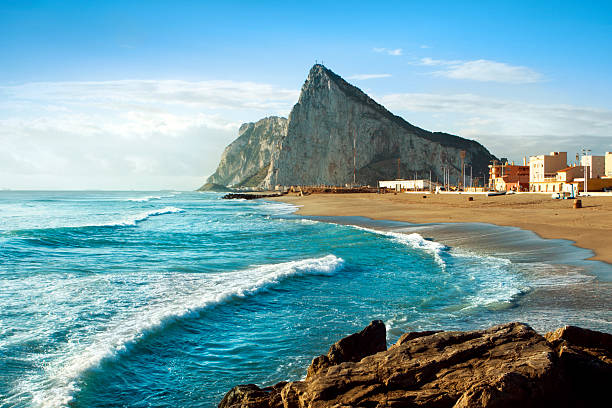

Істо́рія Гібралта́ру, невеликого півострова на півдні Піренейського
півострова поблизу протоки, яка з'єднує Середземне море з Атлантичним
океаном, налічує понад 3000 років. За цей час півострів перетворився з
давнього місця поклоніння в одне з найбільш укріплених місць Європи, за
володіння яким велися запеклі бої. Місто, яке виникло тут у Середньовіччі,
неодноразово переживало облоги і штурми упродовж декількох століть.
У міста є чотири побратими:
Велика Британія
Португалія
Сінгапур
Венесуела

Мова
Офіційна мова Гібралтару — англійська, вона використовується в урядових
установах і школах. Більшість місцевих мешканців двомовна і також
говорить іспанською через близькість Гібралтару до Іспанії. Однак через
різноманітні поєднання етнічних груп інші мови теж поширені. Берберською
та арабською говорять марокканські громади, гінді і синдхі — індійські,
іврит є рідною мовою єврейської громади, мальтійською мовою говорять
деякі сім'ї мальтійського походження.
Релігія
За даними перепису 2001 року, близько 78,1 % католиків, англіканці — 7,0
%, 2,9 % повідомили, що не релігійні.
Туристичні маршрути
Спостереження за дельфінами у Гібралтарі на човні.
Стара ціна 25 370 грн.Нова ціна 17 890 грн.
Одноденна поїздка на Гібралтар із Севільї.
Стара ціна 32 900 грн.Нова ціна 24 600 грн.
З Малаги: Гібралтарська скеля та печери на цілий день.